October 2026
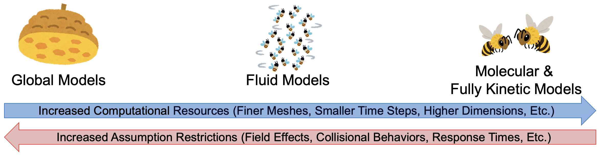
Volume Averaged and Simplified Kinetics
Spatially independent simulations provide:
Volume-averaged plasma parameters.
Energy-dependent coefficients.
Local Field Approximation (LFA).
Local Mean Energy Approximation (LMEA).
Monte Carlo Fluids (MCF).
Typically utilizes the first two or three moments of the Boltzmann equation
Particle species are represented as continuous fluids.
Various assumptions can be used for energy-dependent phenomena.
Higher order fluid models
Hybrid particle-fluid models
Higher order models utilize higher order moments of the Boltzmann equation.
Hybrid models represent a fraction of a species, a single species, or multiple species in a fully-kinetic manner.
Direct Kinetic Methods
Molecular Dynamics (MD)
Particle In Cell (PIC) with Monte Carlo Collisions (MCC)
Individual particles or groups of particles are tracked.
Direct Kinetic Models explicity solve the Boltzmann equation.
In MD models, inter-molecular forces between particles are calculated and used to update paricle data.
In PIC-MCC models, individual particles are traced and are subject to macroscopic fields and particle-particle Monte Carlo collisions.
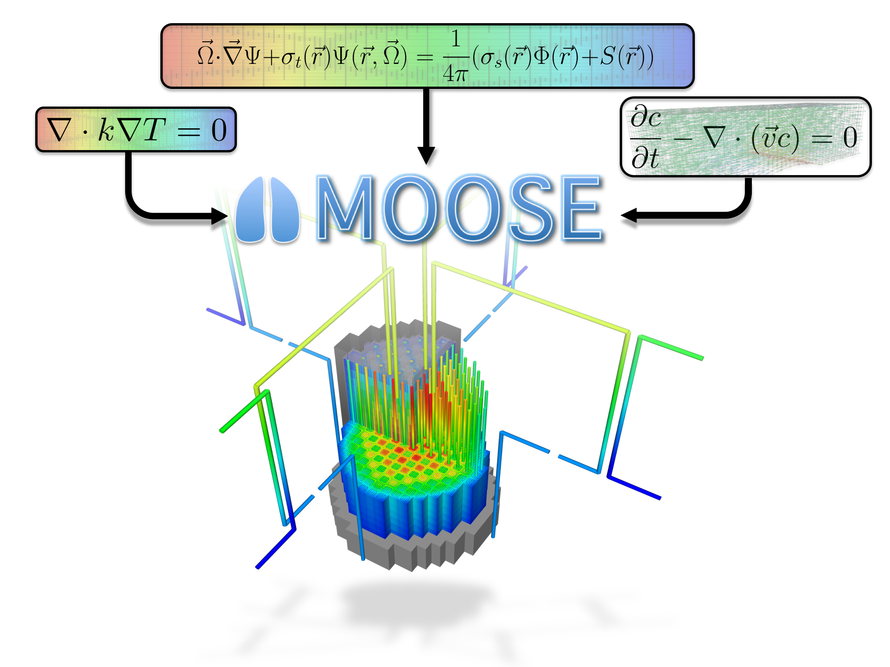
Development started in 2008
Open-sourced in 2014
Designed to solve computational engineering problems and reduce the expense and time required to develop new applications by:
Being easily extended and maintained
Working efficiently on a few and many processors
Providing an object-oriented, extensible system for creating all aspects of a simulation tool
Motivated by multiphysics problems in nuclear engineering, but applications have extended into diverse fields
Core team at Idaho National Laboratory, but with significant contributions from other laboratories, universities, and industry, both domestically and internationally
250 contributors
58,000 commits
5,000 unique visitors per month
~40 new Discussion participants per week
150M tests per week
Continuous and Discontinuous Galerkin FEM
Finite Volume
Supports fully coupled or segregated systems, fully implicit and explicit time integration
Automatic differentiation (AD)
Unstructured mesh with FEM shapes
Higher order geometry
Mesh adaptivity (refinement and coarsening)
Massively parallel (MPI and threads)
User code agnostic of dimension, parallelism, shape functions, etc.
Native support for executing multiphysics simulations across applications
GPU support for execution via MFEM and Kokkos
Operating Systems:
macOS (Conda, Docker)
Linux (Apptainer, Conda, Docker)
Windows (Docker, WSL)
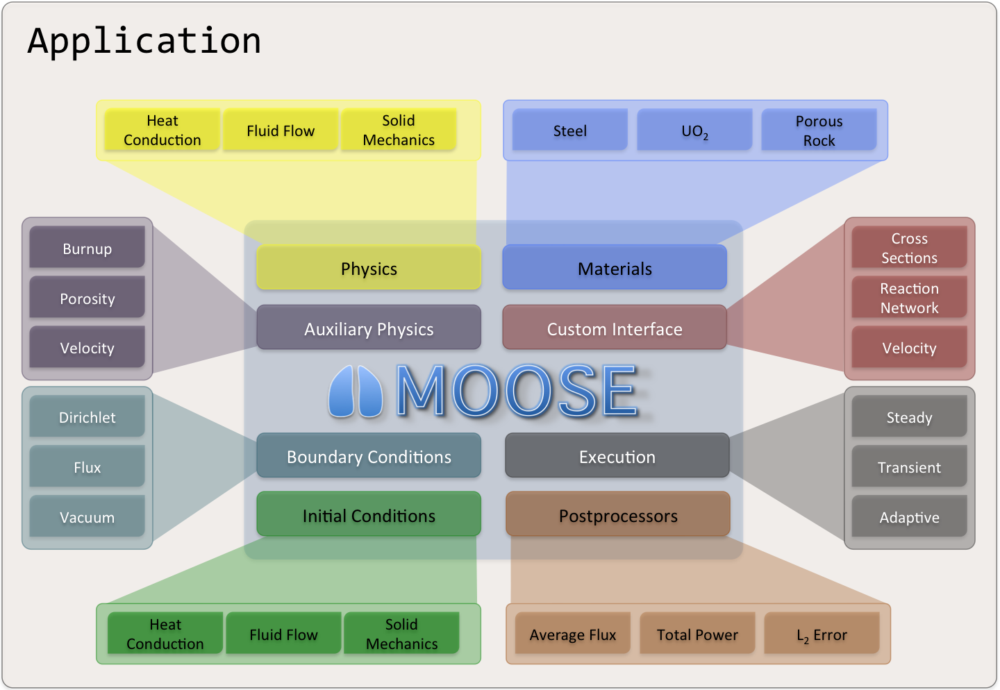
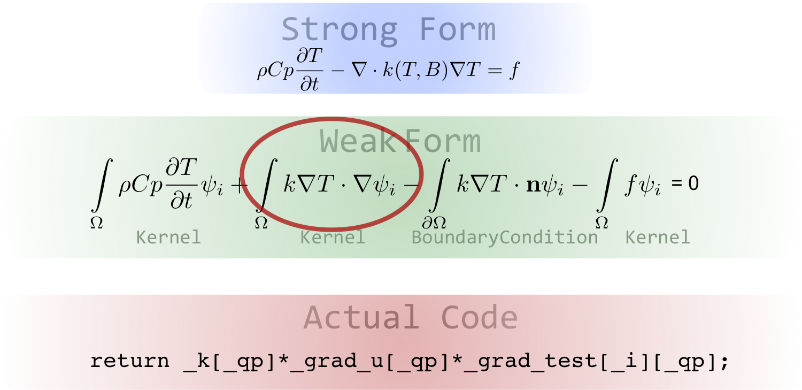
Follows a Nuclear Quality Assurance Level 1 (NQA-1) development process
All changes undergo independent review and must pass regression tests before merge
Includes a test suite and documentation system to allow for agile development while maintaining a NQA-1 process
External contributions are guided through the process by the team, and are very welcome!
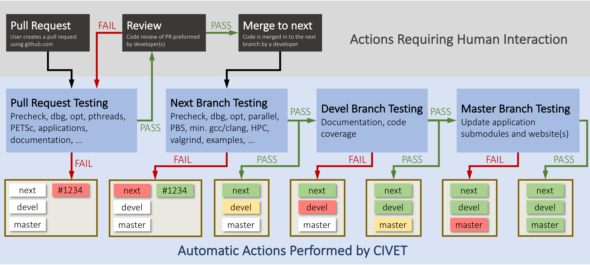
LGPL 2.1
Does not limit what you can do with your application
Can license/sell your application as closed source
Modifications to the library itself (or the modules) are open source
New contributions are automatically LGPL 2.1
Zapdos is an open source multi-fluid plasma code, that:
Utilizes the finite element method, and
Solves for species densities in log-molar form.
As a MOOSE-based application, Zapdos can take advantage of:
Scalable parallel computing, and
Flexible multiphysics coupling.
Validation and Verification
Modeling physical systems and comparing to experimental results.
Utilizing the Method of Manufactured Solutions (MMS) to ensure correct implementation.
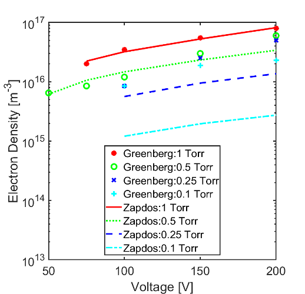
Experimental Comparison with results from Greenberg and Hebner (1993).
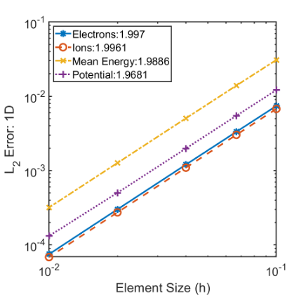
1D MMS Convergence study results for a single ionic species, electrons and mean electron energy.
Improving physics
Electromagnetic coupling
Improving the user interface
Finite volume implementation
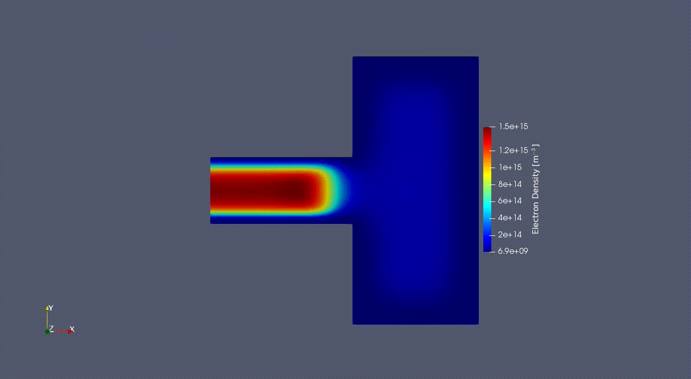
2D Electron Oscilation in the GEC reference cell
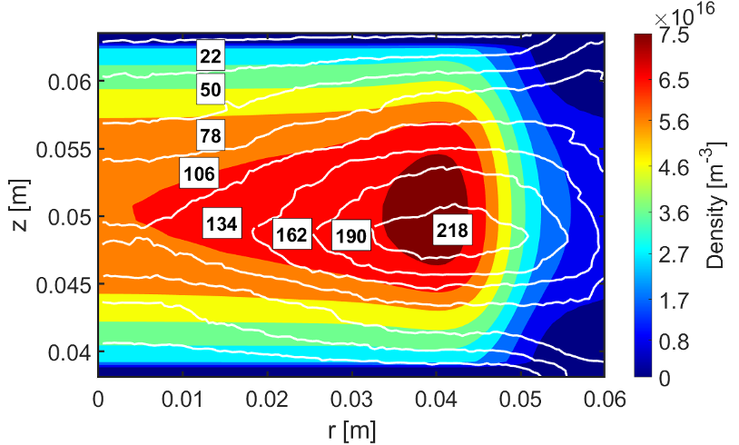
75 [V] peak to peak at 100 [mTorr]
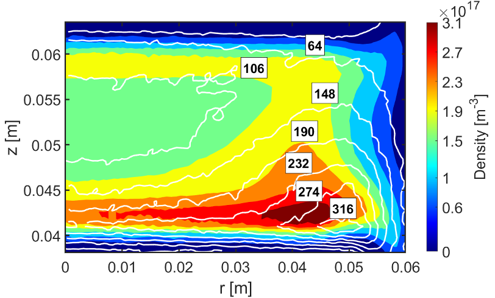
75 [V] peak to peak at 100 [Torr]
The 2D electric field radiation pattern of a dipole antenna, modeled using the Electromagnetics Module
Helium impinging on a plate in an Oxygen atmosphere
In Zapdos, the logarithmic form or the logarithmic-molar form is used to calculate the species density. This is done for numerical stability and to prevent the calculation of nonphysical, negative densities by the numerical solver. The logarithmic form is given by
and the logarithmic-molar form is given by
Where is the traditional species density, is the modified species density, and is Avogadro's number
where and denote some particle species, denotes the number of bodies in the source term, and denotes sources of species from chemical reactions.
where and are the mobility and diffusivity of species respectively, and is the electric potential.
where denotes charged particles and denotes neutral particles.
Where is the stoichiometric coefficient of the reaction, is the reaction rate, and is the density of species .
When evaluating an electrostatic system, Poisson's equation is used to calculate the electrostatic potential,
where is the elementary charge, is the permitivity of free space, and is the charge density in the system.
Additionally, Zapdos is capable of calculating an effective electric field using the form
In cases where electromagnetic systems are considered, MOOSE's Electromagnetics Module is used to perform field calculations.
represents a boundary of the domain
Required for upcoming hands-on
Installing a text editor with input file syntax auto-complete (VSCode)
The results shown here are from Tutorial 1
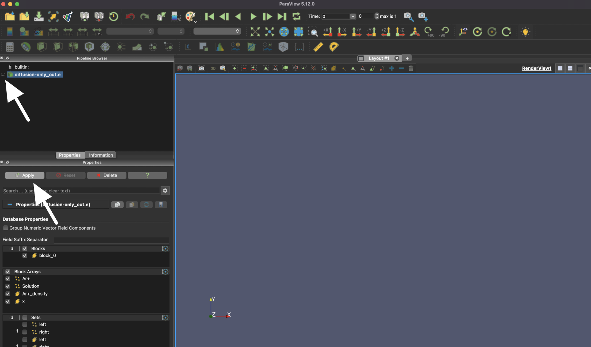
After opening an exodus file, the first step is always to click "Apply" or the eye icon.
Once the results are loaded, select the "Plot Over Line" option to visualize a 1D result.
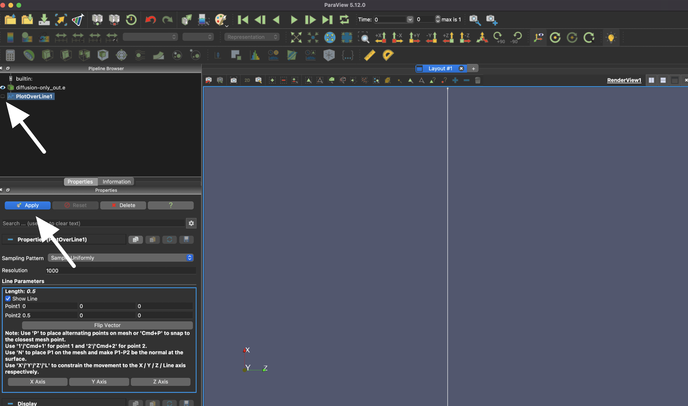
The line plot also needs to be applied, so you can also use "Apply" or the eye icon here.
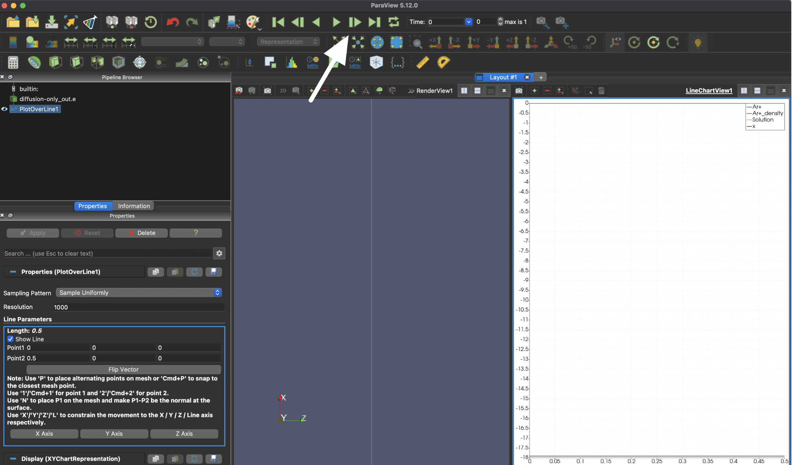
Finally, you can navigate through time with the green triangle icons on the top of the page.
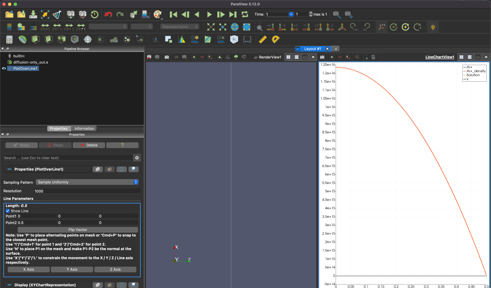
As you advance, you should see something that looks like this.
The results shown here are from Tutorial 2
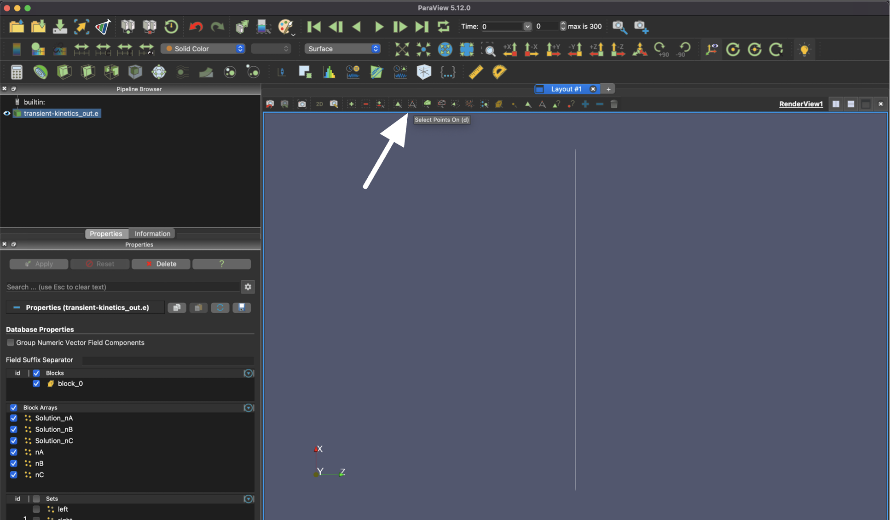
After applying the results from your simulation, select the "Select Points On" icon.
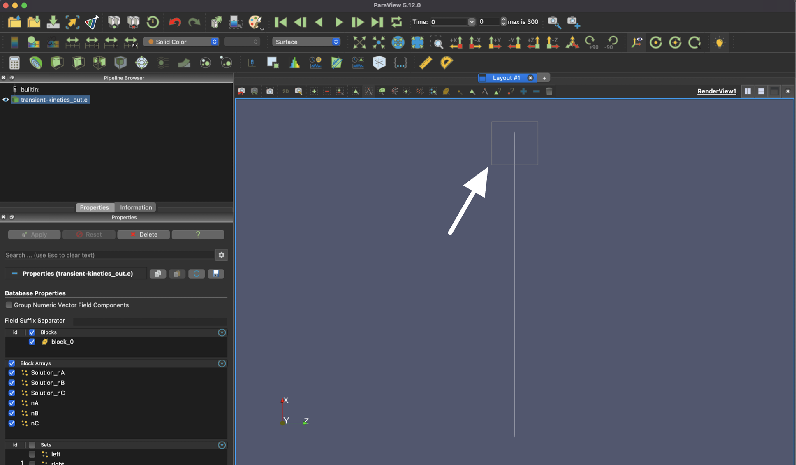
Then, you will need to draw a box that contains at least a part of the singular element in order to select it.
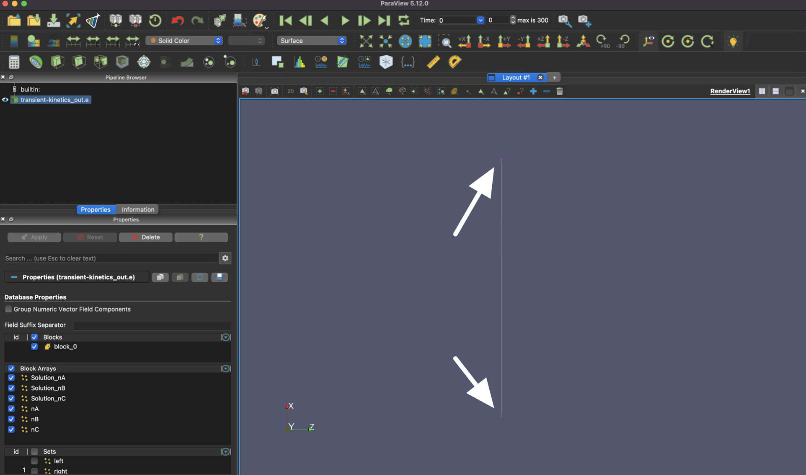
After your box selection, you should see at least one of the ends of the element highlighted.
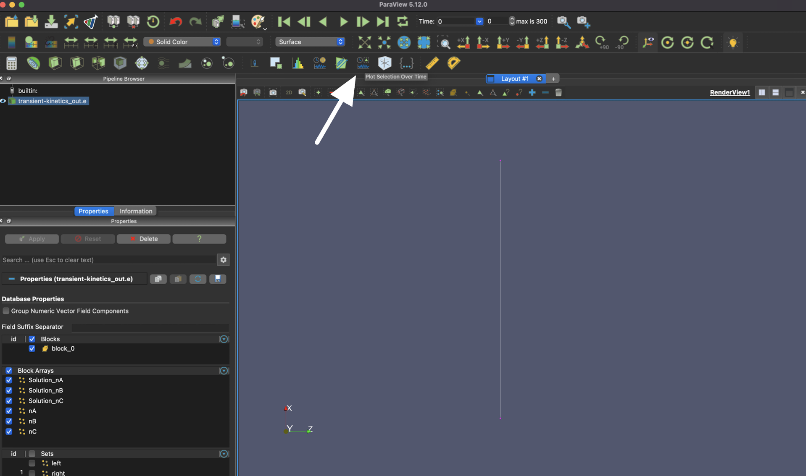
To see the time evolution of the system, select the "Plot Selection Over Time" button.
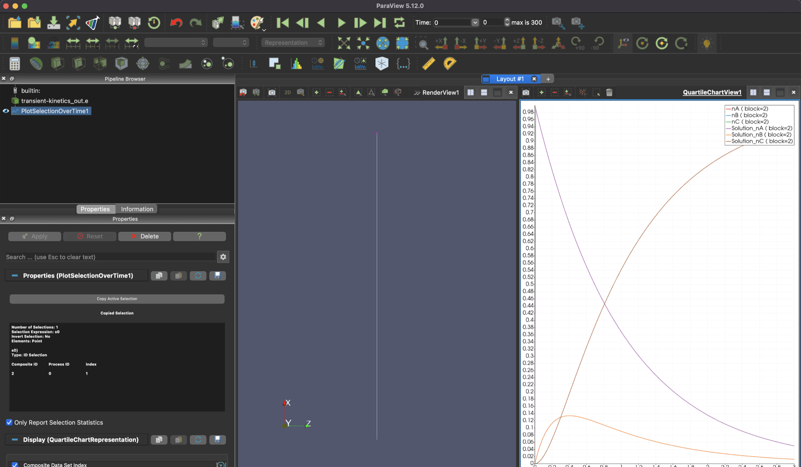
As you advance in time, you should see something that looks like this.
Consider a one dimensional single species, , plasma on the domain . Additionally, consider that this is a purely diffusive system with a constant source term due to a constant background gas density . This system takes the following form
Where is a constant diffusion coefficient, is the species density, and is a constant first order reaction rate. Additionally, a zero-density boundary condition will be imposed
[Materials]
[gas_species_0]
type = ADHeavySpecies
heavy_species_name = Ar+
heavy_species_mass = 6.64e-26
heavy_species_charge = 1.0
diffusivity = 1
#diffusivity = 2
[]
[]
[Materials]
[FirstOrder_Reaction]
type = GenericRateConstant
reaction = FirstOrder
reaction_rate_value = 9.8696
#reaction_rate_value = 4.9348
[]
[]
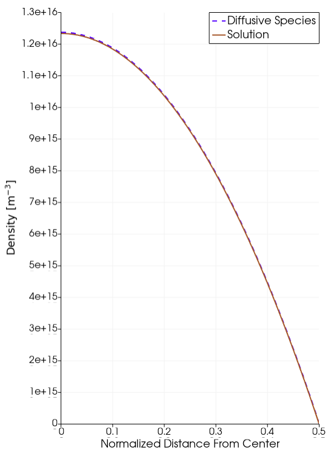
Diffusive Species Solution.
Consider a system of 3 species, .
decays at a rate of into species
decays at a rate of into species
Species is a stable species
The initial condition for this system is given by
[Reactions]
[Gas]
#Name of each variable on the reactant side
species = 'nA nB nC'
#Define type of coefficient (rate or townsend)
reaction_coefficient_format = 'rate'
#Define if using log form
use_log = false
#Define if using automatic differentiation
use_ad = true
#Define which material block the reactions take place.
# For undefine blocks, naming starts at 0
block = 0
#Define reactions and coefficients
reactions = 'nA -> nB : 1
nB -> nC : 5'
[]
[]
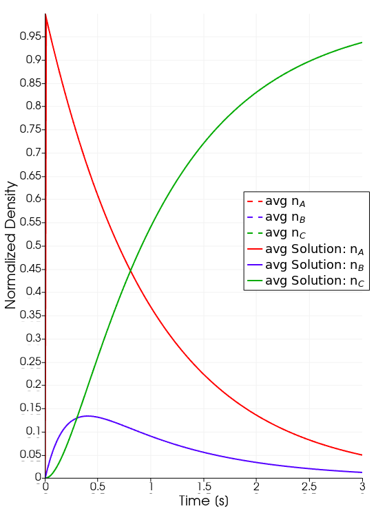
Species evolution over time.
As a user of Zapdos, you have access to some support from developers and other users via the community discussions forum on GitHub:
https://github.com/shannon-lab/zapdos/discussions
If you are struggling with an issue, search to see if someone else has run into the same problem. If they haven't, start a new discussion! You're also welcome to start a discussion about how to contribute any functionality you have developed so others can use it, to share new ideas, or even show off new results!
Finally, if you encounter a replicable bug in Zapdos code or would like to request a new feature be developed, you can visit our issues page:
https://github.com/shannon-lab/zapdos/issues
We do not have time to develop all requested features, but we are happy to help others get started in developing and contributing the features they need for their work. Reach out! :)
Consider a single species plasma, an ionic Argon plasma, in a one-dimensional system on the domain . In this system
There is an initial uniform distribution of singly charged Argon ions;
The ion-only plasma is subject to the electric field generated by its own charge density; and
The walls of this system destroy (or remove) ions.
This is the same problem as described on page 26-27 of Lieberman and Lichtenberg (1994).
[Materials]
[gas_species_0]
type = ADHeavySpecies
heavy_species_name = Ar+
heavy_species_mass = 6.64e-26
heavy_species_charge = 1.0
heavy_species_p = 13.3322
[]
[]
The ion mobility and diffusivity and are inversly proportional to the pressure.
Consider an Argon capacitively coupled plasma (CCP). Utilize the MOOSE Postprocessor system to calculate the volume-averaged electron temperature.
The background gas density, pressure in the electron material block, and ion mobility and diffusivity coefficients must all be changed for this study
Background Gas Density
[AuxKernels]
[Ar_val]
type = FunctionAux
variable = Ar
function = 'log(3.22e22/6.022e23)'
execute_on = INITIAL
[]
[]
Pressure in the electron material block, and ion mobility and diffusivity coefficients.
[GasBasics]
type = ElectronTransportCoefficients
#True means variable electron coeff, defined by user
interp_trans_coeffs = true
#Leave as false, unless computational error is due to rapid coeff. changes
ramp_trans_coeffs = false
#Name for electrons (usually 'em')
electrons = em
#Name for the electron mean energy density (usually 'mean_en')
electron_energy = mean_en
#User difine pressure in pa
p_gas = 133.322
#True if pressure dependent coeff.
pressure_dependent_electron_coeff = true
#Name of text file with electron properties
property_tables_file = rate_coefficients/electron_moments.txt
[]
# The dielectric coefficient of the gas (defaulted to the permittivity of free space)
[gas_permittivity]
type = ElectrostaticPermittivity
potential = potential
[]
#The material properties of the ion
[gas_species_0]
type = ADHeavySpecies
heavy_species_name = Ar+
heavy_species_mass = 6.64e-26
heavy_species_charge = 1.0
mobility = 0.144409938
diffusivity = 6.428571e-3
[]
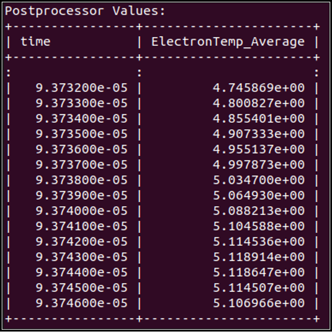
Consider an Argon DC discharge over water. Within Zapdos, users can model material surface interfaces of plasma processes (in this case, electrons diffusing into a water’s surface). This is done using what is called the Interface System within Zapdos/MOOSE.
The current input file assumes that all of the electrons enter the water. What will happen if we change the reflection coefficients at the boundary of the water for the electrons and the electron mean energy?
[em_physical_right]
type = HagelaarElectronBC
variable = em
boundary = 'master0_interface'
electron_energy = mean_en
r = 0.00
position_units = ${dom0Scale}
[]
[Arp_physical_right_diffusion]
type = HagelaarIonDiffusionBC
variable = Arp
boundary = 'master0_interface'
r = 0
position_units = ${dom0Scale}
[]
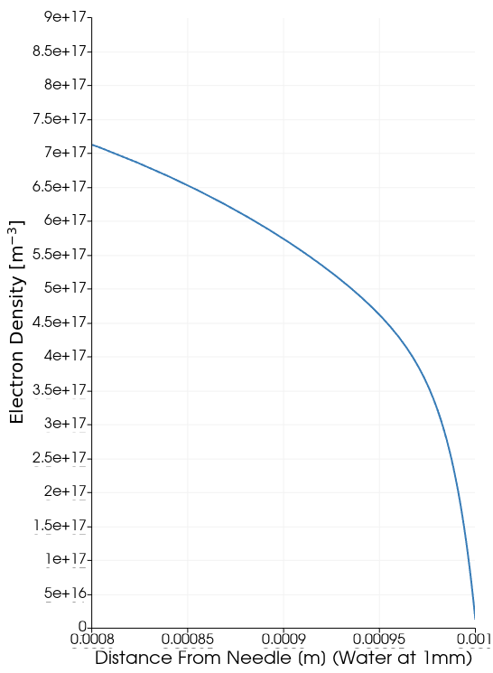